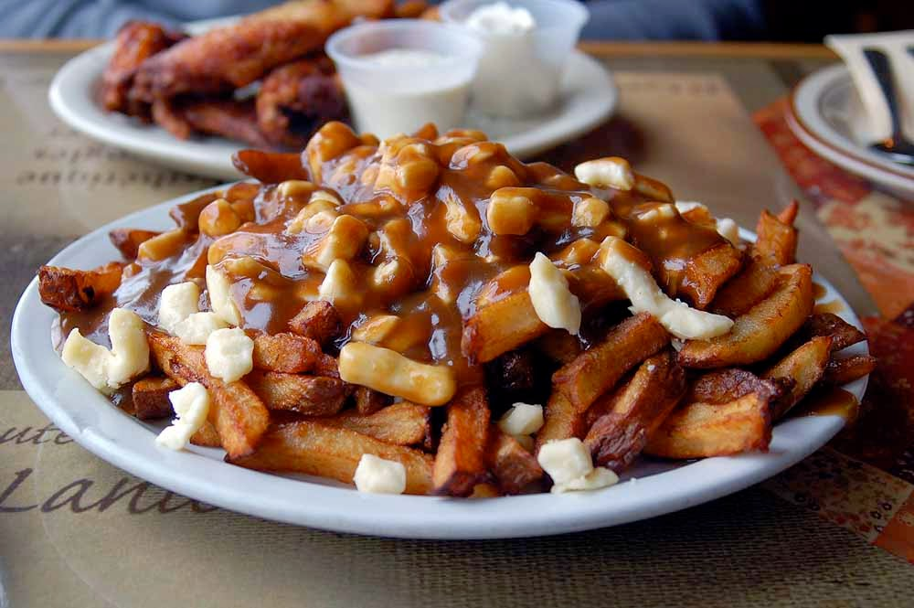
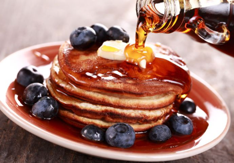

Culinária do Canadá
A culinária canadense reflete a diversidade cultural do país, com influências indígenas, francesas e britânicas, incluindo pratos tradicionais muito apreciados.
Poutine
Um prato típico canadense feito com batatas fritas, queijo coalho e molho de carne, muito popular em todo o país.
Maple Syrup
O xarope de bordo é um símbolo do Canadá, usado em panquecas, sobremesas e diversas receitas tradicionais.
Tortas de Frutas
Tortas de frutas como blueberry e butter tart são sobremesas clássicas, muito apreciadas em festivais e nas casas canadenses.

Peixes Defumados
Peixes como salmão e truta defumados são consumidos há séculos, refletindo a tradição indígena e a importância dos recursos naturais.